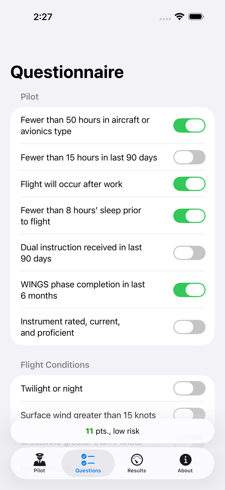
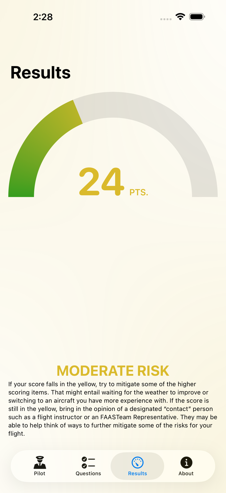
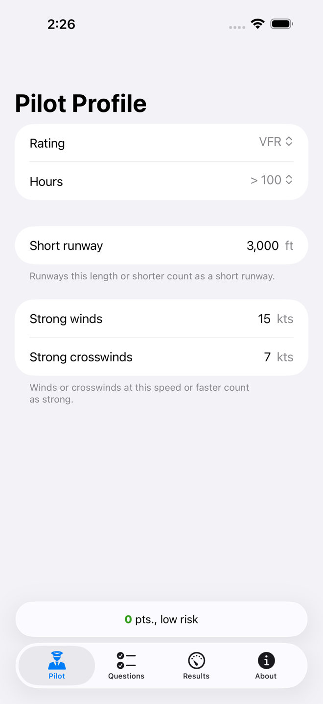
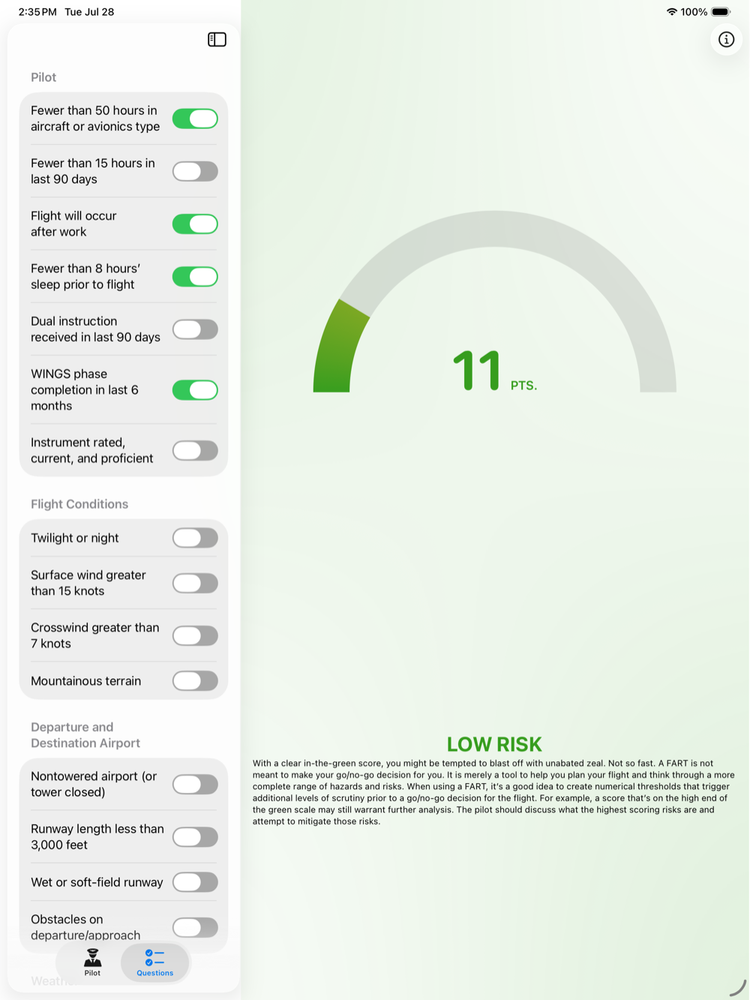
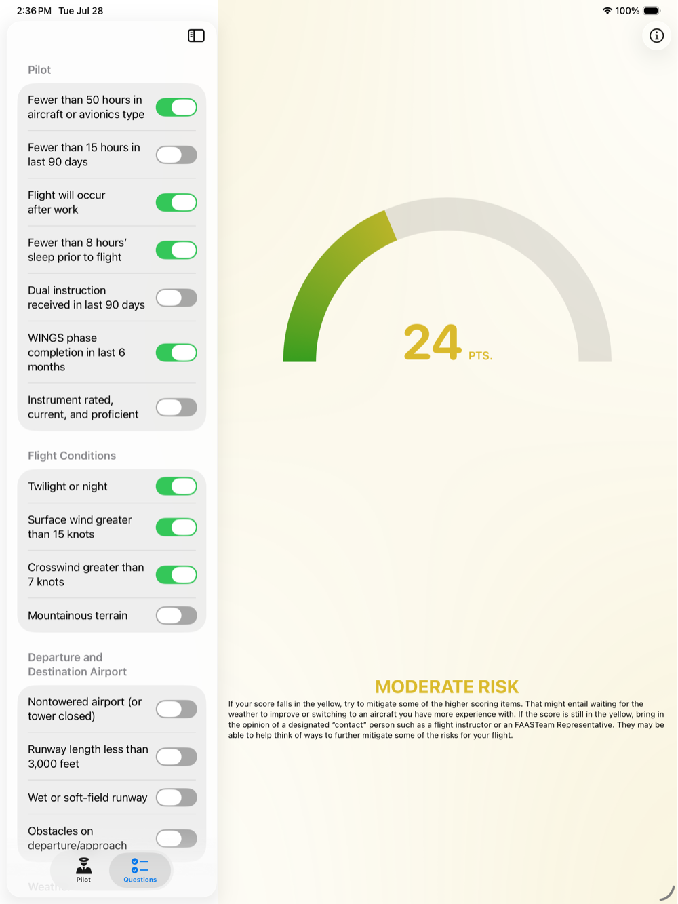
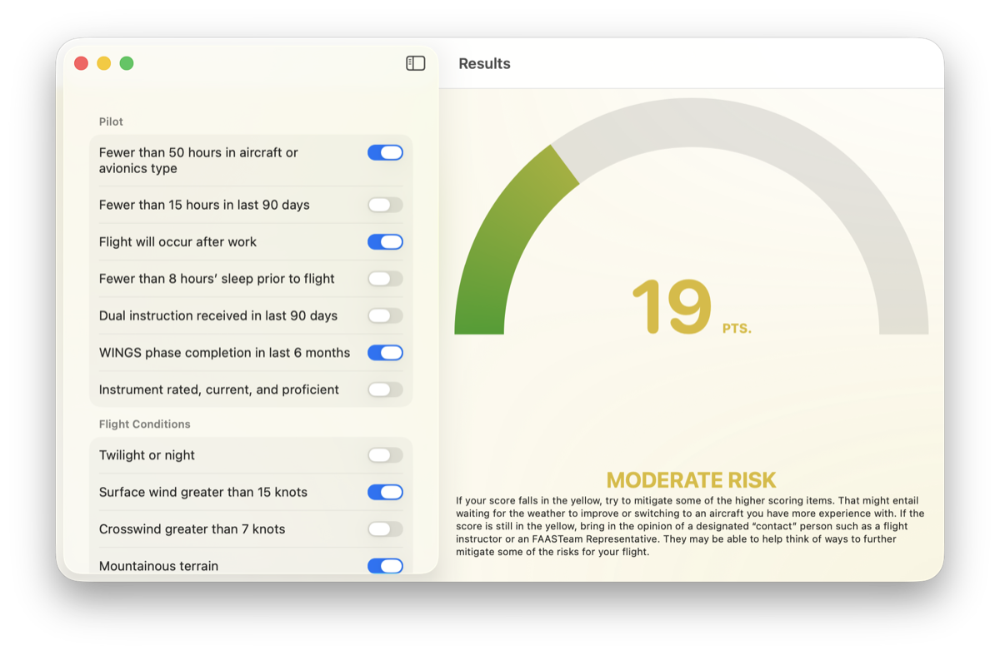
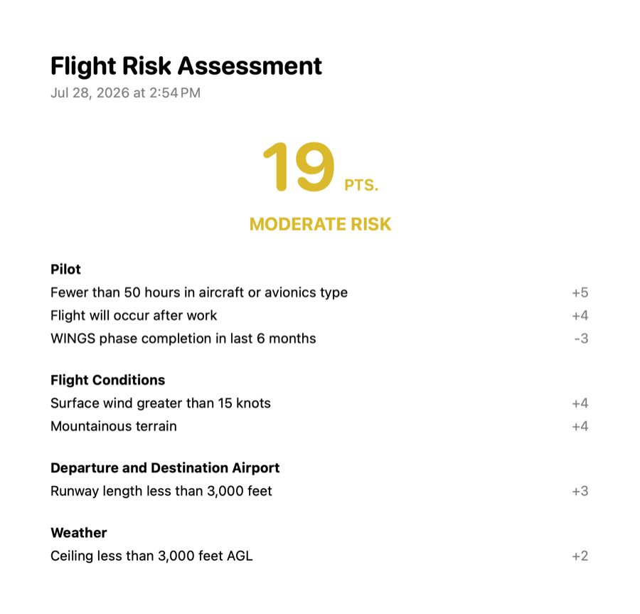
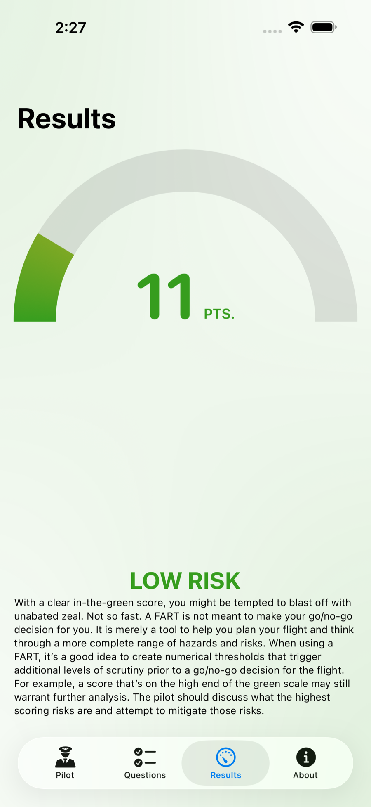

Pre-flight self-briefing
Add up the risk before you add power.
Flight Assessment of Risk Tool is the FAA Safety Team’s Flight Risk Assessment Tool, written as an app. Answer a short questionnaire about the flight you’re planning. It totals the points and tells you which band you landed in.
Free and open source. For iPhone, iPad, and Mac. Requires iOS 26 or macOS 26.
- Fewer than 8 hours’ sleep +5
- Flight will occur after work +4
- Twilight or night +5
- Surface wind greater than 15 knots +4
- Mountainous terrain +4
- WINGS phase in the last 6 months −3
Six answers totalling 19 points, which is moderate risk for a VFR pilot with under 100 hours: moderate begins above 14 and high begins above 20.
The bands
The same score means different things to different pilots.
An instrument-rated pilot with a thousand hours can absorb risk that a fresh private pilot can’t. The FAA draws the lines in different places for each. Set your rating and your hours once, and every score after that is read against your row.
| Pilot | Low | Moderate | High |
|---|---|---|---|
| VFR, under 100 hours | 0–14 | 15–20 | 21 and up |
| VFR, 100 hours or more | 0–20 | 21–25 | 26 and up |
| IFR, under 100 hours | 0–20 | 21–30 | 31 and up |
| IFR, 100 hours or more | 0–30 | 31–35 | 36 and up |
The questions
Four categories. Every answer is a switch.
Nothing to type and nothing to look up. A full run-through takes about a minute, and the score moves as you go.
-
Pilot
- Fewer than 50 hours in type+5
- Fewer than 8 hours’ sleep+5
- Flight will occur after work+4
-
Flight conditions
- Twilight or night+5
- Surface wind over 15 knots+4
- Mountainous terrain+4
-
Airport
- Nontowered field+5
- Short runway+3
- Obstacles on departure+3
-
Weather
- No weather at the destination+4
- Ceiling below your minimum+2
- Visibility below your minimum+2
-
And six ways to bring it down
- WINGS phase in the last 6 months−3
- Instrument current and proficient−3
- VFR flight following−3
- VFR flight plan filed−2
- Precision approach available−2
- Dual instruction in the last 90 days−1
Short runway, strong wind, strong crosswind, low ceiling, low visibility — you decide what those mean. Set your own numbers in the pilot profile, and the questions ask about them.
Screens
One app, at home on all three.
-

The questionnaire. -

The score and risk category. -

The pilot profile.
-

The questionnaire. -

The results.
-

The main window. -

An exported report.
On the Mac, a finished assessment becomes a report listing every answer, the score, and the risk category. Print it, or export it as a PDF for the flight bag.
Where the number comes from
The FAA’s worksheet, minus the worksheet.
The FAA Safety Team publishes a Flight Risk Assessment Tool: a sheet that assigns points to the things that get pilots hurt — inexperience in type, a night flight over mountains, a short wet runway, an approach you haven’t flown in months. This app is that sheet, in a form you’ll actually fill out.
Read the FAA Safety Briefing article on the FRAT
A score is not a go/no-go decision. It’s a way to see the risk you’re accepting, so you can mitigate it, get a second opinion, or stay on the ground. The decision stays yours.
Privacy and source
Nothing leaks.
Every assessment stays on your device. There’s no account, no sign-in, and no network connection needed to score a flight. The app reports anonymous crash and performance diagnostics, unlinked to your identity, and nothing else.
The whole thing is on GitHub under the MIT license — read it, build it, or open a pull request.
Before the next one
Score it on the ground.
A minute of switches, and you know what you’re carrying into the airplane with you.
